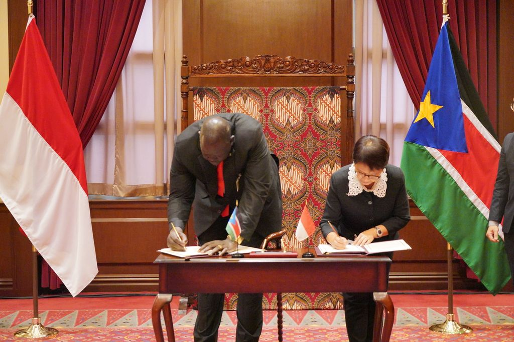
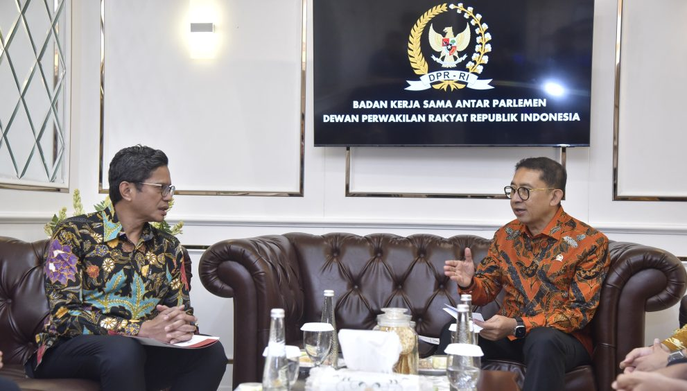

Kerja sama bilateral adalah bentuk hubungan atau kerjasama antara dua negara atau lebih yang dilaksanakan secara langsung dan melibatkan kedua belah pihak untuk saling menguntungkan dalam berbagai bidang. Kerja sama ini dapat mencakup sektor politik, ekonomi, sosial, budaya, pertahanan, serta perdagangan dan investasi. Tujuan utama dari kerja sama bilateral adalah untuk memperkuat hubungan antarnegara dan menciptakan manfaat yang bersifat timbal balik bagi kedua negara yang terlibat. Kerja sama bilateral umumnya didasarkan pada kesepakatan bersama dan dijalin melalui perjanjian atau nota kesepahaman (MoU) yang mengatur berbagai isu dan bidang yang menjadi prioritas kedua negara. Biasanya, dalam kerja sama ini, kedua pihak berkomitmen untuk saling mendukung dalam mencapai tujuan-tujuan tertentu, seperti pembangunan ekonomi, perdamaian, dan keamanan, serta peningkatan hubungan diplomatik.
Hubungan Kerja Sama antara Indonesia dan Sudan: Indonesia dan Sudan memiliki hubungan kerja sama bilateral yang cukup erat di berbagai bidang, meskipun kedua negara memiliki perbedaan dalam banyak aspek, baik dalam hal ukuran, ekonomi, maupun budaya. Beberapa bidang utama kerja sama Indonesia-Sudan meliputi: 1. Bidang Ekonomi dan Perdagangan: Indonesia dan Sudan memiliki potensi untuk saling menguntungkan dalam sektor ekonomi, terutama dalam perdagangan produk seperti minyak, gas, produk pertanian, serta barang-barang manufaktur. Indonesia juga berusaha untuk meningkatkan ekspor produk-produk teknologinya ke Sudan. Walau Indonesia dan Sudan telah menjalin hubungan perdagangan yang baik, meskipun volumenya belum sebesar negara-negara lainnya. Indonesia mengekspor berbagai produk, seperti kendaraan bermotor, mesin, produk pertanian, dan tekstil ke Sudan, sementara Sudan juga mengekspor hasil bumi, seperti kapas, minyak, dan produk pertanian ke Indonesia. 2. Bidang Pendidikan dan Pelatihan: Kerja sama dalam sektor pendidikan juga penting. Indonesia menawarkan berbagai beasiswa untuk pelajar Sudan yang ingin melanjutkan studi di Indonesia, serta memfasilitasi pertukaran budaya dan pendidikan. Ini merupakan salah satu bentuk kerja sama dalam sektor pendidikan yang bertujuan untuk mempererat hubungan antar masyarakat kedua negara dan memperkenalkan budaya Indonesia.
Bidang Budaya dan Pariwisata: Kedua negara juga menjalin kerja sama dalam bidang kebudayaan, dengan pertukaran budaya, promosi pariwisata, dan kegiatan lainnya yang bertujuan untuk memperkenalkan budaya masing-masing.
Bidang Keamanan dan Diplomasi: Indonesia dan Sudan sering bekerja sama dalam forum-forum internasional seperti Organisasi Konferensi Islam (OKI), dan memiliki kesamaan pandangan dalam beberapa isu internasional, seperti perdamaian dan keamanan global.
Bidang Pertanian dan Teknologi: Indonesia memiliki pengalaman dalam sektor pertanian dan teknologi yang bisa diterapkan di Sudan untuk mendukung pembangunan sektor tersebut di Sudan, salah satunya dalam hal pengembangan teknologi pertanian dan pertukaran pengetahuan teknis.